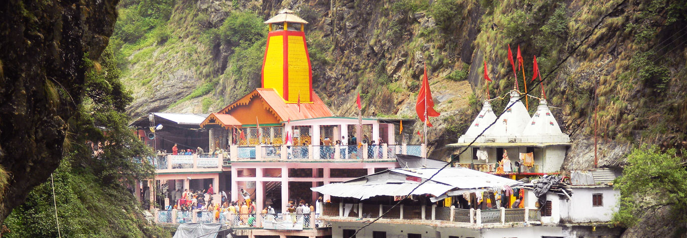

ABOUT YAMUNOTRI TEMPLE

On the western side of Garhwal Himalayas, in the Uttarkashi district of Uttarakhand, lies the holy place of Yamunotri. About 3,293 metres above the sea level, Yamunotri stands proudly with its enormous mountain peaks, glaciers and gushing waters of Yamuna.
River Yamuna, the second most sacred river of India, originates in Yamunotri, making it one of the pilgrimage sites in the Chota Char Dham Yatra in Uttarakhand.
The venerated goddess Yamuna is said to be the daughter of Sun and twin sister of Yama (the god of death); in Vedas, Yamuna is called Yami (lady of life). A bath in the sanctified waters of Yamuna is said to cleanse all sins and protect from untimely or painful death.
Such strong associations in Hindu mythology place Yamuna Devi (goddess) in high ranks of divinity.
On the western side of Garhwal Himalayas, in the Uttarkashi district of Uttarakhand, lies the holy place of Yamunotri.
About 3,293 metres above the sea level, Yamunotri stands proudly with its enormous mountain peaks, glaciers and gushing waters of Yamuna. River Yamuna, the second most sacred river of India, originates in Yamunotri, making it one of the pilgrimage sites in the Chota Char Dham Yatra in Uttarakhand.
Yamunotri Temple Opening Dates 2024 =>
The sacred shrine in Uttarakhand will open for the pilgrims on May 10, 2024, on the auspicious occasion of Akshay Tritya.